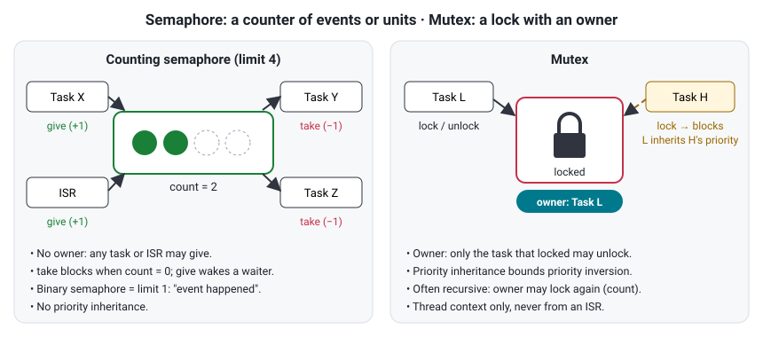

Semaphores: binary and counting
The semaphore is the oldest synchronisation primitive and the most general. It is the right tool for signalling and for counting, and the wrong tool for protecting shared data.
- State the definition of a semaphore and its two operations.
- Distinguish binary and counting semaphores and their initial values for each use.
- Use a semaphore for ISR-to-task signalling and for managing a pool of identical resources.
- Explain why a binary semaphore loses events and when that matters.
- Explain why a semaphore should not be used where a mutex belongs.
The concept
Semaphore (E. W. Dijkstra, 1965): a non-negative integer count with two indivisible operations.
- take (also wait, P, pend): if the count is greater than zero, decrement it and continue; otherwise block until it is greater than zero.
- give (also signal, V, post): if a task is blocked on the semaphore, make one of them Ready and let it complete its take; otherwise increment the count.
A counting semaphore has an upper limit greater than one. A binary semaphore has a limit of one: its count is either 0 or 1.
Read the count as "the number of things available": events that have happened and not yet been consumed, or free units of a resource. A semaphore has no owner. Any task, and any ISR, may give it; the task that gives is often not the task that takes.

Details that matter in real kernels:
- Who wakes first. When several tasks wait, most RTOSes wake the highest-priority waiter, and the longest-waiting one among equals. A few offer pure FIFO order. Know which yours does.
- Direct handoff. When give finds a waiter, the unit goes straight to that task; the count does not go up and down. No third task can sneak in and take it.
- Saturation. A give when the count is already at its limit has no effect. For a binary semaphore, a second event before the first was consumed is lost.
- Timeouts. take accepts a timeout: wait forever, do not wait at all (poll), or wait up to a bounded time. On timeout, take returns an error and the task did not get a unit. Always check it.
When to use a semaphore
| Use | Type | Initial count | Pattern |
|---|---|---|---|
| Signal an event: "data ready", "transfer complete" | Binary | 0 | Waiter takes (blocks); ISR or other task gives. |
| Count events that may arrive in bursts | Counting | 0 | Each event gives once; the handler takes once per event. |
| Manage N identical resources (buffers, DMA channels, connection slots) | Counting | N | Take before using a unit, give when returning it. |
| Rendezvous: two tasks wait for each other | Two binary | 0 and 0 | Each gives the other's semaphore and then takes its own. |
When not to use a semaphore
- To protect shared data (mutual exclusion). It works in the simple case but has three flaws a mutex fixes: any task can give it by mistake and let two tasks in; there is no owner, so no priority inheritance, and you are exposed to unbounded priority inversion (Lesson 11); a task that takes it twice deadlocks itself.
- To pass data. A semaphore carries no payload. A semaphore plus a shared variable is a home-made, buggy queue; use a message queue.
- To wait for a combination of conditions or to wake several tasks. A give wakes exactly one waiter. Use an event group.
- For one-to-one signalling where the kernel offers task notifications and you need neither multiple waiters nor counting beyond what notifications provide: notifications are cheaper.
Semaphore handoff demo
Interactive: take, give, block, hand off
Start with Play scenario for the binary semaphore: it shows a task waiting for an interrupt, and then two interrupts collapsing into one count. Then switch to the counting semaphore and press the buttons yourself. Make two tasks wait, then give from a third, and notice which one is woken.
Worked examples
- The sampling task starts a conversion and calls take with a 5 ms timeout. The count is 0, so it blocks.
- About 2 µs later the conversion-complete ISR reads the result into a variable and gives the semaphore.
- The give finds a waiter: the sampling task becomes Ready and, being higher priority than whatever was running, is switched in when the ISR returns.
- take returns success; the task reads the result. Had the ADC failed, take would have returned a timeout error after 5 ms instead of hanging forever.
Why initial 0: with initial 1 the first take would succeed immediately, before any conversion finished, and the task would read a stale result.
Four tasks share four DMA buffers. Before writing a buffer a task takes the semaphore; the DMA-complete ISR gives it back. When all four are in flight the count is 0 and the next sender blocks until a transfer completes, which gives natural back-pressure. The semaphore only counts free buffers; a separate structure (a free list, protected or lock-free) records which buffer is free.
How it differs from the other primitives
| Compared with | Difference |
|---|---|
| Mutex | A mutex has an owner, can only be released by that owner, supports priority inheritance and cannot be used from an ISR. A semaphore has none of these properties. |
| Event group | A semaphore counts and wakes one waiter per give. An event group stores independent flags, supports AND/OR waits and wakes every waiter whose condition is met. |
| Task notification | A notification targets one specific task and needs no separate object; a semaphore is a shared object any task can wait on. |
| Message queue | A queue carries data and counts messages; a semaphore only counts. |
Common mistakes
- Wrong initial count. 1 instead of 0 for signalling (the first wait falls through); 0 instead of N for a pool (everyone blocks forever).
- Using a binary semaphore to count. Events that arrive faster than they are consumed collapse into one. Use a counting semaphore or a queue when each event matters.
- Ignoring the return value of take. After a timeout the task does not have the unit; proceeding as if it did corrupts the resource accounting.
- Giving more than you took in a resource pool. The count drifts above the real number of resources; set the limit equal to N so the kernel caps it.
- Using a semaphore as a lock. See "When not to use".
- Waiting with a timeout from an ISR. Only the no-wait form of take is legal there.
What this becomes in Zephyr
struct k_sem
- Define with
K_SEM_DEFINE(name, initial_count, limit)or initialise withk_sem_init(). A binary semaphore islimit = 1;K_SEM_MAX_LIMITgives an effectively unbounded counter. k_sem_take(&sem, timeout)returns 0 on success,-EBUSYif called withK_NO_WAITand the count is 0,-EAGAINon timeout. Timeouts:K_FOREVER,K_NO_WAIT,K_MSEC(n).k_sem_give()is ISR-safe. It wakes the highest-priority waiter (longest-waiting among equals), and saturates at the limit.k_sem_count_get()reads the count;k_sem_reset()sets it to 0 and makes current waiters return-EAGAIN.- Zephyr semaphores do not perform priority inheritance. Use
k_mutexfor locking.